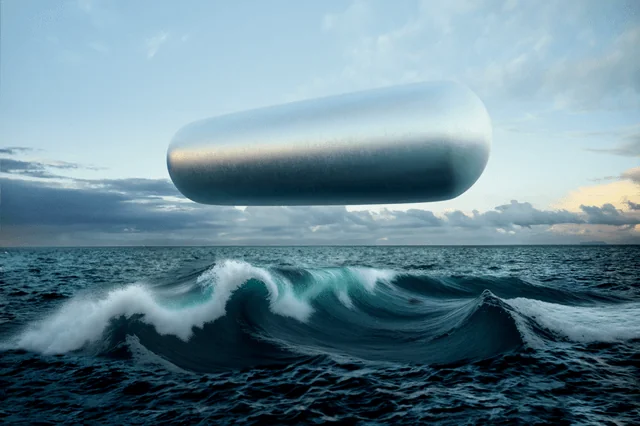
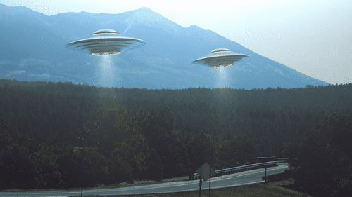

UAP
UAP: Objetos Voladores No Identificados
Los UAP, acrónimo de Objetos Voladores No Identificados, son objetos que se observan en el cielo y que no se pueden identificar como aviones, helicópteros, globos, drones o cualquier otro objeto conocido.
Los UAP han sido reportados por siglos, y han sido objeto de gran especulación y debate. Algunos creen que los UAP son vehículos extraterrestres, mientras que otros creen que son fenómenos naturales o fenómenos de origen humano.
¿Qué tipos de UAP existen?
Los UAP se pueden clasificar en diferentes tipos según sus características. Algunos de los tipos más comunes de UAP son:
1.- Objetos esféricos: Son los UAP más comunes. Suelen ser de color blanco o plateado y tienen un movimiento errático.
2.- Objetos cilíndricos: Son menos comunes que los objetos esféricos. Suelen ser de color negro o gris y tienen un movimiento lento y controlado.
3.- Objetos triangulares: Son también menos comunes que los objetos esféricos. Suelen ser de color negro o gris y tienen un movimiento rápido y acrobático.
¿Qué explica los UAP?
La explicación de los UAP es un misterio. Algunos creen que son vehículos extraterrestres, mientras que otros creen que son fenómenos naturales o fenómenos de origen humano.
Los UAP como fenómenos naturales
Algunos fenómenos naturales pueden confundirse con UAP. Por ejemplo, los meteoros, los satélites, los globos meteorológicos y los fenómenos ópticos pueden parecer objetos voladores no identificados.
Los UAP como fenómenos de origen humano
Algunos UAP pueden ser fenómenos de origen humano, como aviones secretos, drones o fenómenos meteorológicos extremos.
Los UAP como vehículos extraterrestres
La posibilidad de que los UAP sean vehículos extraterrestres es la hipótesis más controvertida. Sin embargo, hay algunos informes de UAP que son difíciles de explicar con fenómenos naturales o de origen humano.
El gobierno de los Estados Unidos ha estado investigando los UAP durante décadas. En 2021, el Pentágono publicó un informe que reconocía la existencia de UAP y que no podía explicar la naturaleza de la mayoría de ellos.
Los UAP son un fenómeno complejo y misterioso. No hay una explicación definitiva para su naturaleza, y es probable que la investigación continúe durante muchos años.